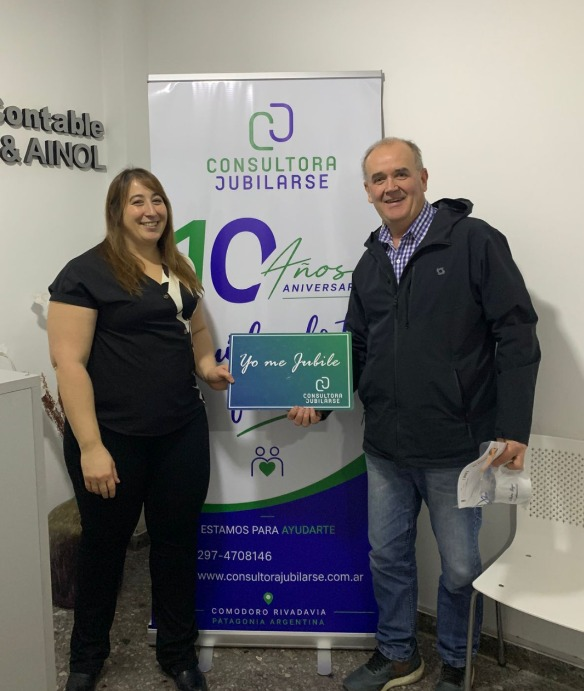
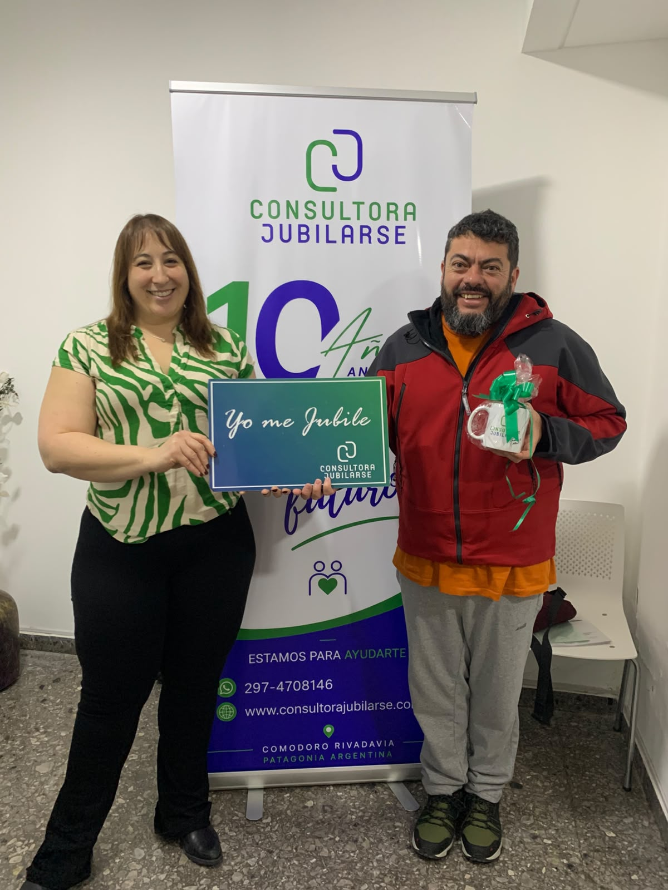

- Hacer visibles los servicios y la actividad cotidiana.
- Explicar temas previsionales con mayor claridad.
- Sostener una frecuencia de publicación.
CASO REAL · MARKETING DIGITAL
Consultora
Jubilarse.
Una estrategia de comunicación sostenida para explicar servicios, mostrar el trabajo cotidiano y acompañar el vínculo con su comunidad.


IDENTIDAD DEL CLIENTE
01 · PUNTO DE PARTIDA
Dar continuidad a la comunicación.
El desafío fue construir una presencia digital más activa, cercana y organizada, capaz de combinar información previsional con la experiencia real de la consultora.
- Planificación mensual de contenidos.
- Producción gráfica, fotográfica y audiovisual.
- Seguimiento para aprender y ajustar.
02 · FORMA DE TRABAJO
De la estrategia
a cada publicación.
El proceso conecta objetivos, planificación, producción y revisión para sostener una comunicación coherente.
- 01
Relevar
Entender servicios, públicos, consultas frecuentes y momentos importantes.
- 02
Planificar
Definir temas, formatos, fechas y prioridades en un cronograma compartido.
- 03
Producir
Crear piezas, fotografías, historias y reels a partir de material real.
- 04
Medir y ajustar
Revisar el desempeño y usar lo aprendido para el siguiente ciclo.
03 · EQUIPO DEL PROYECTO
Estrategia y producción
trabajadas en conjunto.
La coordinación conecta las decisiones de negocio con la planificación y la producción de comunicación.

DIRECCIÓN DEL PROYECTO
Leandro Velasques
Estrategia, coordinación e implementación.

MARKETING Y COMUNICACIÓN
Daniela Rincón
Planificación, comunicación y producción junto a Hola Agencia.
04 · CONTENIDOS Y REDES
Una comunicación con
ritmo, criterio y cercanía.
Las piezas combinan información útil, servicios, historias reales y momentos del equipo.
PRODUCCIÓN PARA REDES SOCIALES
Distintos formatos para distintas necesidades.
Posteos, carruseles, historias, reels y fotografías organizados dentro de una misma línea de comunicación.



PLAN MENSUALCalendario de contenidos
TEMAFORMATOESTADO
Información previsionalCarruselPlanificado
Experiencia del clientePosteoEn producción
Actividad del equipoHistoriaListo
05 · PLANIFICACIÓN
Antes de publicar,
se arma el recorrido.
El cronograma organiza temas, formatos, fechas y piezas para que el equipo pueda revisar el trabajo antes de publicarlo.
- Calendarización de contenidos.
- Definición de temas y prioridades.
- Organización de posteos, historias y reels.
- Revisión y ajuste de cada etapa.
06 · RESULTADOS
Datos para entender
cómo evoluciona el trabajo.
Una lectura de los últimos 90 días informados por Meta Business Suite.
INSTAGRAMÚltimos 90 días
Incremento de seguidores101+124,4 %
Visitas al perfil521+108,4 %
Interacciones862+207,9 %
Visualizaciones51.284
FACEBOOKÚltimos 90 días
Incremento de seguidores52+188,9 %
Visitas1.400+43 %
Interacciones468+64,8 %
Visualizaciones42.900+56,6 %
Fuente: Meta Business Suite · 11 jun 2026 — 8 sep 2026.
CANALES OFICIALES
Conocé la comunicación
en sus propios espacios.

¿QUERÉS ORDENAR TU COMUNICACIÓN?
Podemos definir
el próximo paso.
Trabajamos la estrategia, la planificación y la producción para sostener una presencia digital coherente.
Hablemos sobre marketing